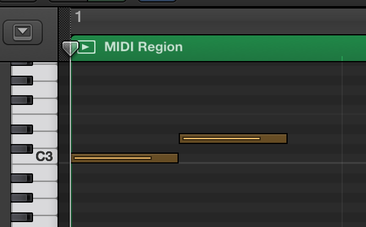
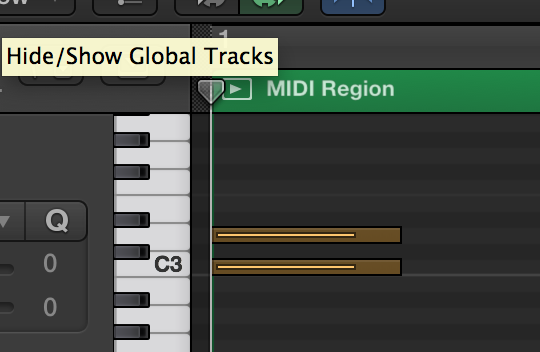

Subtleties of standard MIDI file delta time
I have been playing around with generating MIDI files using Node.js recently. I’m using a minimal MIDI file writer called node-midimal. Everything was working fine until I tried to output a drum beat that had a hihat and a snare/kick playing on the same beat.
I was writing out the notes both with a delta time of 0, which should have played them on the same beat. However, when I opened the resulting file up in Logic Audio, I saw something like this:

I changed the second note to play correctly in Logic and saved the file out as another MIDI file.

Then I grabbed a little MIDI file dumper tool called Daktari MIDI, which is sort of like a disassembler for MIDI files, and dumped out both files.
The first is the output of my mysteriously incorrect program:
000000t: Control change :: Channel 0. Controller 7. Value: 127
000000t: Note on :: Channel 0. Note 60. Velocity 100
000050t: Note off :: Channel 0. Note 60. Velocity 100
000000t: Note on :: Channel 0. Note 62. Velocity 100
000050t: Note off :: Channel 0. Note 62. Velocity 100
000000t: Meta-event type $2f (End-track event) of length 0The second is the same file corrected and re-saved using Logic:
000000t: Control change :: Channel 0. Controller 7. Value: 127
000000t: Note on :: Channel 0. Note 60. Velocity 100
000000t: Note on :: Channel 0. Note 62. Velocity 100
000048t: Note off :: Channel 0. Note 60. Velocity 100
000000t: Note off :: Channel 0. Note 62. Velocity 100
000000t: Meta-event type $2f (End-track event) of length 0Comparing them, it seems like the note timings are ok on both files. The note-ons happen at zero time.
There are two small things. First is that the note times have been changed slightly. This is because my programmatically-generated file is using 500 ticks per quarter note, and Logic is using 480 (relatively standard among sequencers).
The other is that the note events are in slightly different orders. That’s when it hit me. Delta time applies for all events, and a note off event is still treated as an event that advances the time base. In order for two notes to play at the same time, both note off events have to happen sequentially before any note-off events. Adding a note using track.note() adds both note-on and note-off, which means that the next note added will start at least where the other ended.
Using track.notes() to add notes at once will do the right thing.
This is blindingly obvious now, but caused me some consternation late last night.